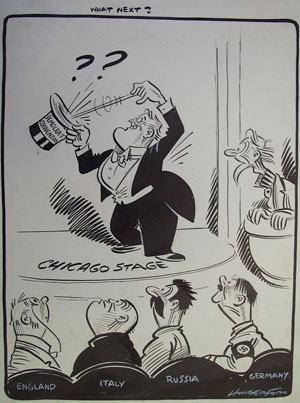
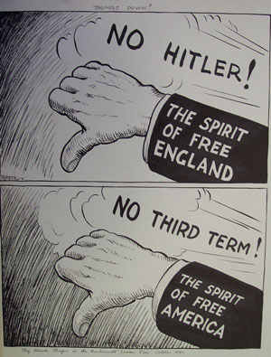

|

|

|
| What Next? by Hungerford | Thumbs Down! by Shafer |
Americans were not the only people who had interest in the 1940 elections. Those countries that were at war in 1940 had an interest in knowing who would be the next president, as that would have an impact on American foreign policy. FDR was not clear about his intentions to run again until close to the Democratic convention, and thus there was considerable suspense.
The comparison between Hitler and FDR in Hungerford's "What
Next" is a particularly virulent comment on the view that by allowing
a third term, American liberties would be endangered.
Previous Next